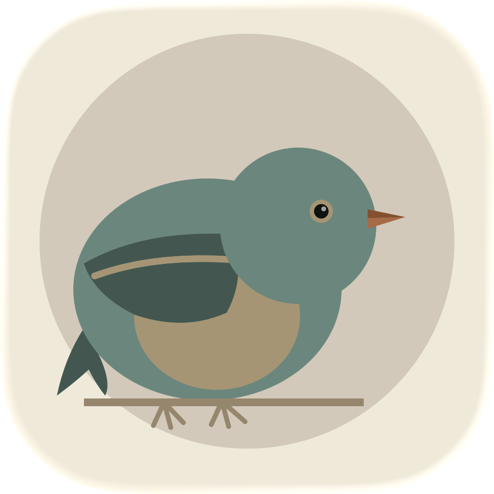

Wren – Daily Expense Tracker
Easy, fast budgeting on the go

Easy, fast budgeting on the go
Know what you can spend, before you spend it.
Wren makes everyday spending decisions fast and simple. Set spending limits and track against them.
This is not a business expense tracker, tax receipt logger, or complicated budgeting system. I don't link your bank accounts or give you fancy graphs. I want to offer a simple tool that focuses on a few habits, not your whole financial life.
To use this app effectively, you just need to think of one or two regular spending habits that you want to improve (food, coffee/tea, nightlife, clothes, etc.). Then think of the maximum you want to spend every day, week, two weeks, or month. After you add these budgets to the app and start tracking your expenses, you'll be able to make wiser spending decisions in real time.
Questions or feedback? Get in touch.